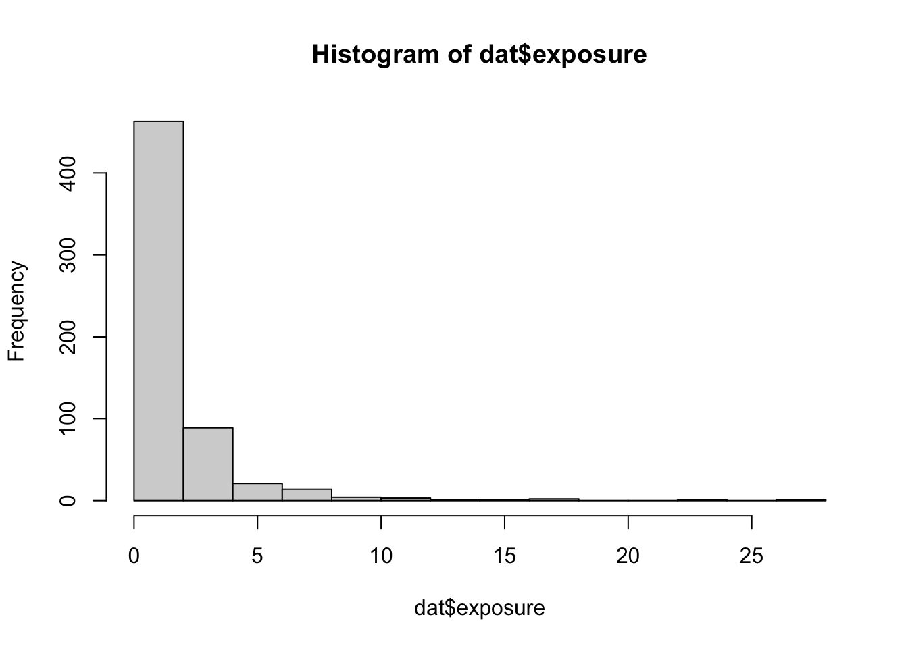
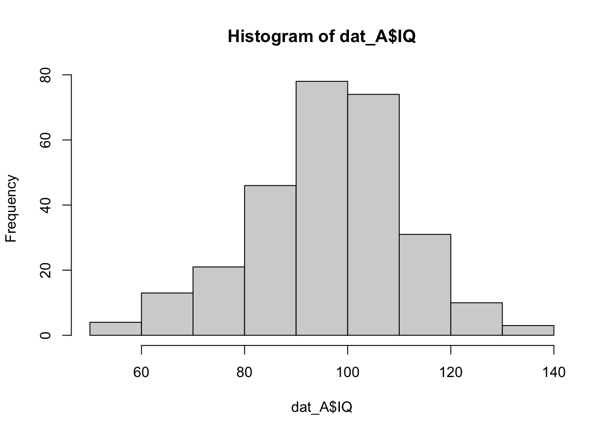
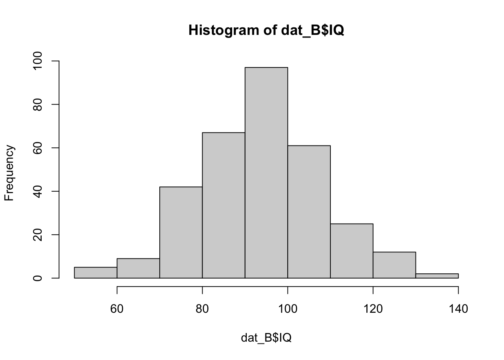

The R Markdown file for this lab can be found here.
The potential outcomes framework is the standard approach to causal inference. In this lab, we will learn how to apply this framework to analyze research papers in our field, and hopefully gain an appreciation for the power of this framework. We will also preview some important mathematical basics to understanding how we can operationalize this framework.
By the end of this part, you should be able to:
Please sort yourselves into \(3n\) groups, \(n \in \mathbb{N}\). Ideally, you should join a group with others who have a major most similar to yours. You will each be assigned a paper from the below:
Sociology: Pager (2003), “The Mark of a Criminal Record.” American Journal of Sociology.
Political Science: Miguel, Satyanath & Sergenti (2004), “Economic Shocks and Civil Conflict: An Instrumental Variables Approach.” Journal of Political Economy.
Each group will discuss among themselves and present a 3-5 minute summary as follows:
By the end of this part, you should be able to:
tapply() to compute group-wise
means of baseline covariates.Let’s start by simulating some data. You do not need to know how this simulation works. Simply run the below code chunk and treat the resulting data as you would any other dataset. For the sake of avoiding too much abstraction at this stage, let’s consider the following fake scenario:
The Department of Health wants to answer the following question: Does watching short-form video media cause worse brain development among children? We have enough funding to hire 600 test subjects, and no moral qualms about humane treatment. We can measure whatever we need, but we also have data on previous exposure, actual IQ, number of incidences of academic probations, and sex (assume M/F).
set.seed(2025) # for reproducibility
N <- 600 # number of observations
# (log-normal)
exposure <- rlnorm(N, meanlog = 0, sdlog = 1.0)
# (Normal)
IQ <- rnorm(N, mean = 95, sd = 15)
# (Bernoulli with p=0.49)
male <- rbinom(N, 1, 0.49)
# Put into a data.frame
dat <- data.frame(id = 1:N, exposure, IQ, male)
head(dat)## id exposure IQ male
## 1 1 1.860335 82.22982 1
## 2 2 1.036284 72.25608 0
## 3 3 2.166590 110.43226 0
## 4 4 3.569727 129.51451 0
## 5 5 1.449147 105.63320 1
## 6 6 0.849715 96.15045 1You should now have a dataframe dat.
How should we answer the question? Please identify:
Let’s look at how each of the confounding variables is distributed
using hist().
# [Your code here]
hist(dat$IQ)hist(dat$exposure)
hist(dat$male)If we randomly assign individuals into treatment groups, what shape should we expect for the within-group distributions of each variable?
We now create a treatment indicator by flipping a fair coin for each observation. You don’t need to know how to do this yet. Again, just run the code chunk below.
# 50/50 assignment
group <- sample(c("A","B"), size = N, replace = TRUE)
dat$group <- group
# Quick counts
table(dat$group)##
## A B
## 280 320prop.table(table(dat$group))##
## A B
## 0.4666667 0.5333333Now create two subsets of dat.
# [Your code here]
dat_A <- dat[dat$group=="A", ]
dat_B <- dat[dat$group=="B", ]Plot the within-subset distributions for each variable. Do they look the same? Are the two groups comparable?
# [Your code here]
hist(dat_A$IQ)
hist(dat_B$IQ)
Bonus: Let’s reduce the sample size N. Are the two
groups comparable now?
Bonus: In general, how can we assess whether our two groups are comparable?
We will compute group means of each covariate using
tapply(), which we learned in class. Please calculate the
means of each variable for each subgroup. Name each as follows:
mean_groupletter_variablename.
# [Your code here]
mean_A_exposure <- tapply(dat$exposure,dat$group,mean)[["A"]]
mean_B_exposure <- tapply(dat$exposure,dat$group,mean)[["B"]]
mean_A_IQ <- tapply(dat$IQ,dat$group,mean)[["A"]]
mean_B_IQ <- tapply(dat$IQ,dat$group,mean)[["B"]]
mean_A_male <- tapply(dat$male,dat$group,mean)[["A"]]
mean_B_male <- tapply(dat$male,dat$group,mean)[["B"]]Let’s plot the above results. You don’t need to know how to do the below yet.
balance_table <- data.frame(
covariate = c("Exposure", "IQ", "Gender"),
mean_A = c(mean_A_exposure, mean_A_IQ, mean_A_male),
mean_B = c(mean_B_exposure, mean_B_IQ, mean_B_male)
)
balance_table$diff_in_means <- with(balance_table, mean_A - mean_B)
balance_table## covariate mean_A mean_B diff_in_means
## 1 Exposure 1.8242908 1.606882 0.21740922
## 2 IQ 95.9481691 93.691826 2.25634358
## 3 Gender 0.4928571 0.443750 0.04910714For each covariate, are the A and B means close? Explain why randomization implies they should be close in expectation even if any one draw shows some noise.
The potential outcomes for a unit \(i\) are \(Y_i(A)\) and \(Y_i(B)\). Randomization picks one at random to reveal. If groups are balanced on covariates and unobservables in expectation, then comparing mean outcomes between A and B estimates a causal effect.
We illustrate this by simulating an outcome Y that
depends on our covariates, but not on group
assignment.
# outcome depends on covariates (nonlinear), but not on group
Y <- 1.5 + 0.4*log(1+exposure) + 0.6*(IQ > 1.5) - 0.8*IQ + rnorm(N, 0, 0.7)
dat$Y <- YWhat is the difference in mean Y between A and B? What
would happen if assignment were correlated with one or more
covariates?
# [Your code here]